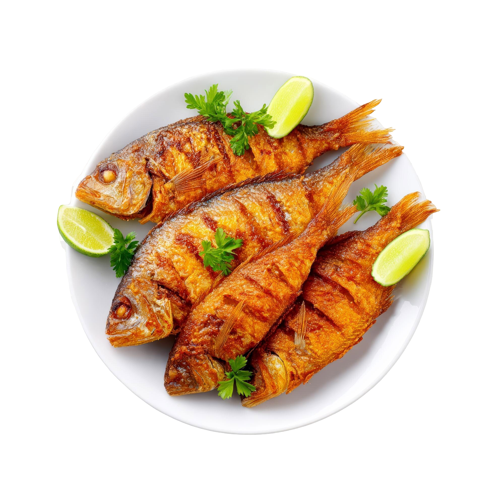
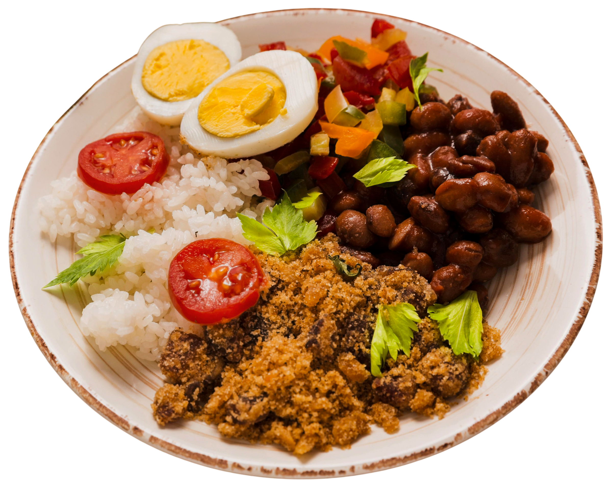
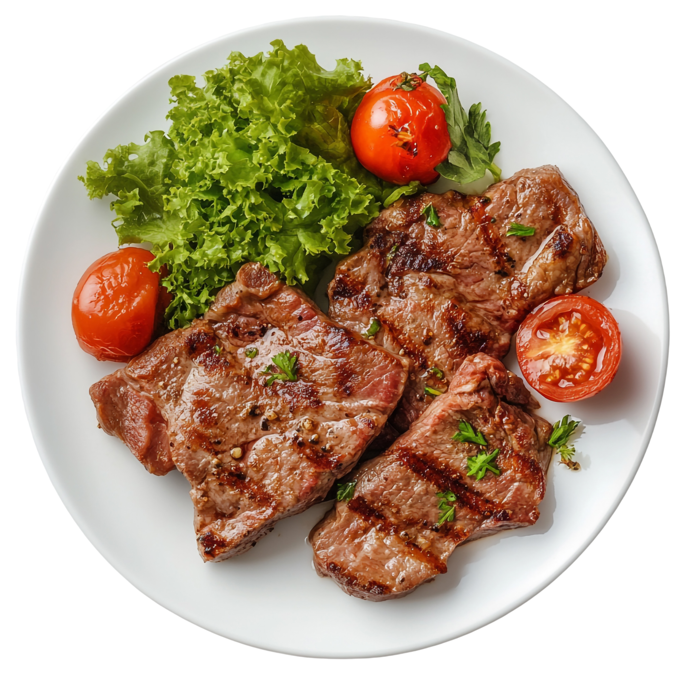
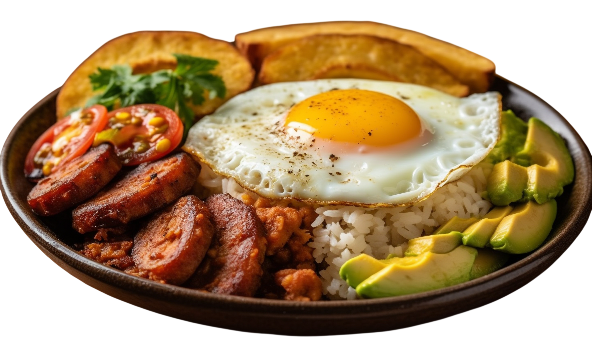

Deliciosa sopa casera de arroz, preparada con verduras frescas y un toque de cilantro.
Caliente, reconfortante y llena de sabor.
Platos Especiales
Preparaciones de mayor volumen o cortes seleccionados (como churrasco o mojarra) orientados a quienes buscan una opción más elaborada dentro del menú.

Almuerzo Corriente
La opción más accesible y tradicional para el día a día, servida típicamente en combo que incluye sopa, proteína, principio, arroz, ensalada y bebida.


Platos Ejecutivos
Una alternativa completa y equilibrada concebida para el almuerzo diario, que combina una proteína principal a la plancha o sudada con guarniciones tradicionales.

Bandeja Paisa
Uno de los platos más representativos de la gastronomía colombiana, caracterizado por su abundancia y variedad de ingredientes (frijoles, chicharrón, carne molida, huevo frito, tajada de plátano, chorizo, arroz y aguacate).